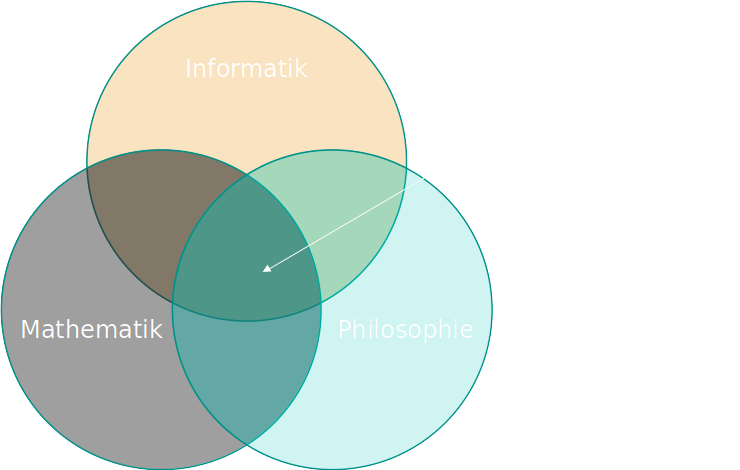

Theoretische Informatik I
(Wirtschaftsinformatik)
Vorlesung Sommersemester 2023
DHBW HN
Dr. Tobias Weber
Organisatorisches
Wie ist der Ablauf der Vorlesung?
- Pausen (45-60 Minuten Blöcke)
- Fragen und Anregungen willkommen
Welche Materialien werden benötigt?
- Slides
-
Skript
- Literaturempfehlungen
- AB 1, AB2, AB3
- Zettel & Stift
Wo kann ich sonst noch nachlesen?
- Uwe Schöning:
Theoretische Informatik - kurzgefasst
(Spektrum, 4.)
- Boolos/Burgess/Jeffrey:
Computability and Logic
(Cambridge, 5.)
- Martin Hofmann, Martin Lange:
Automatentheorie und Logik
(Springer, 1.)
- Donald E. Knuth:
The Art of Computer Programming
(Addison-Wesley 3.)
- Sanjeev Arora and Boaz Barak:
Computational Complexity (Cambridge, 3.)
- Godehard Link:
Collegium Logicum
(mentis, 1.)
- The Internet
(esp.
Barak: Introduction to Theoretical Computer Science
)
Wie sieht die Klausur aus?
- Ähnlich zu den Übungsblättern
- Konstruktionen
- keine Beweise
- keine Hilfsmittel
Welche Vorkenntnisse sind nötig?
Inhaltlicher Überblick
Was ist theoretische Informatik?

Wie ist die Vorlesung geplant?
- Organisatorisches / Probleme und Formale Sprachen (heute)
- Algorithmen und Automaten (3.4.2023) | AB 1
- Aufwand und Landau-Notation (17.4.2023)
- Berechenbarkeit und Turing-Maschinen (24.4.2023) | AB 2
- Komplexität und das P-NP-Problem (08.5.2023)
- Unberechenbarkeit und Diagonalisierung (15.5.2023) | AB 3
- Ausblick, Wiederholung (22.5.2023)
Was sind Probleme?
Abstraktion & Formalisierung
Grundsätzliche Fragen
- Wie formalisieren wir ein Problem?
- Wie schwer ist ein Problem?
- Ist ein Problem lösbar?
Formale Sprachen
Probleme als formale Sprachen